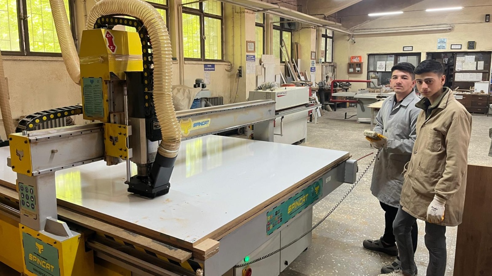

1 / 10
BİST Sakarya Mesleki ve Teknik Anadolu Lisesi
Alanlar ve Kariyer Fırsatları Sunumu
2025
Genel Bilgiler & Okulumuzdan Sayılarla
🫠Genel Bilgiler
İl / İlçe: Sakarya / Adapazarı
Adres: Çukurahmediye Mah. Sakarya Cd. Meydan Sok. No:3
Telefon: 0264 274 58 10
E-posta: 194089@meb.gov.tr
Web: sakaryaeml.meb.k12.tr
Kuruluş Yılı: 1946
📊 Sayılarla Okulumuz
Toplam Çalışan
161
Yönetici
8
Öğretmen
134
Toplam Öğrenci
1319
Örgün Öğrenci
1029
MESEM Öğrenci
273
Geçmişten Bugüne & Geleceğe Uygulamalı Eğitim
📜 Kısa Tarihçe
1946: 3 bölümle öğretime başladı
Elektrik, Bilgisayar, Telekomünikasyon, Makine alanları açıldı
1999: Deprem sonrası yeniden yapılandırıldı
2021: BİST Sakarya MTAL olarak adı değişti
2023-2024: Bazı bloklar deprem nedeniyle boşaltıldı
🯠Uygulamalı Eğitim
ATP: 11. sınıf sonunda yaz stajı (40 gün)
AMP: 12. sınıfta haftada 3 gün işletmelerde
MESEM: 9. sınıftan itibaren haftada 4 gün işletmede eğitim
✅ Sigorta ve işlemler okul tarafından yürütülmektedir
⚙️ Makina ve Tasarım Teknolojisi Alanı
📠Eğitim: Teknik resim, CNC, CAD-CAM, talaşlı imalat
💼 Kariyer: CNC operatörü, teknisyen, kalıp ustası
ğŸ Sektör: Otomotiv, beyaz eşya, savunma sanayi
📋 Alan Hakkında: Klasik ve bilgisayar kontrollü üretim tezgâhlarında makine imalatı işlemleri, kalıplama teknikleri, sac metal kalıpları, hacim kalıpları ve iş kalıpları imalatı, iki ve üç boyutlu makine ve mekanizmaları çizimleri, makinelerin temel bakım ve onarımı, mermer kesme ve işleme tezgâhlarında imalat işlemleri, endüstriyel döküm ve kalıplama tekniğine uygun üretime yönelik modelleme ve prototiplerini yapma yeterlikleri kazandırılır.
🔧 Metal Teknolojisi Alanı
📠Eğitim: Kaynak çeşitleri, montaj, ölçme teknikleri
💼 Kariyer: Kaynakçı, montaj elemanı
ğŸ Sektör: Gemi yapımı, altyapı, çelik konstrüksiyon
📋 Alan Hakkında: Metal sanayi, küresel düzeyde hızla değişen pazar ve rekabet koşulları nedeniyle sürekli ve dinamik bir gelişim içindedir. Bu özellikleri nedeniyle metal sanayi, stratejik bir sanayi olarak ülkelerin yakın ilgisini çekmekte ve bu sektör için devletler tarafından özel planlamalar yapılmaktadır. Özellikle hızla küreselleşmekte olan bu sektörde, rekabet büyük yoğunluk kazanmakta ve sanayileşmiş ülkeler bu sektörün korunması ve rekabet gücünün geliştirilmesi için özel politikalar uygulamaktadırlar. Ülkelerin gelişimi, mesleklerinde bilgi ve teknolojiyi yakalamış insan gücü ile ölçülmektedir. Öğretmenlerin rehberliğinde öğrencilerin bilgi ve teknolojiye ulaştırılması, yetiştirilmesi ve yüksek öğretime hazırlanması endüstriyel teknik okullarında yapılmaktadır. Metal Teknolojisi alanı, sanayinin istediği gibi mesleğinde yeniliklere açık ve nitelikli insan yetiştirmeyi amaçlamaktadır. Metal Teknolojisi alanı; metalleri sıcak veya soğuk olarak biçimlendirme, kaynak işleri, ısıl işlemler, malzeme muayene yöntemleri, mesleği ile ilgili NC, CNC tezgâhlarında çalışma konularının verildiği meslek alanıdır.
⚡ Elektrik-Elektronik Teknolojisi
📠Eğitim: Elektrik tesisatları, PLC, devreler
💼 Kariyer: Elektrik teknisyeni, otomasyon uzmanı
ğŸ Sektör: Enerji, fabrika bakım, OSB'ler
📋 Alan Hakkında: Bilgisayar destekli uygulamalar kullanarak tasarım yapar, Endüstriyel kontrol ve arıza analizi yapar, Elektrik makineleri ve kontrol sistemlerini kurar(otomasyon), bakım onarımını yapar ve arızasını tespit ederek giderir, Endüstriyel elektrik sistemlerini kurar, bakım onarımını yapar ve arızasını tespit ederek giderir.
💻 Bilişim Teknolojileri Alanı

📠Eğitim: Yazılım, ağ sistemleri, donanım, veri tabanı
💼 Kariyer: Yazılımcı, IT uzmanı, sistem yöneticisi
ğŸ Sektör: Finans, e-ticaret, teknoloji firmaları
📋 Alan Hakkında: Bilişim Sistemleri ve Teknolojileri mezunları, teknoloji sektöründe, finans sektöründe, sağlık sektöründe ve diğer birçok sektörde çalışabilirler. Mezunlar, yazılım geliştirme, veritabanı yönetimi, ağ yönetimi, web tasarımı, veri analizi ve raporlama gibi konularda uzmanlaşabilirler.
🪑 Mobilya ve İç Mekân Tasarımı

📠Eğitim: Mobilya imalatı, çizim, CNC uygulamaları
💼 Kariyer: Dekoratör, mobilya ustası
ğŸ Sektör: Mobilya üretim, iç mimarlık ofisleri
📋 Alan Hakkında: İşlevsel özellikleri ile mekanları kullanışlı hale getiren, estetik değeriyle de yaşadığımız ya da çalıştığımız mekanların sıcak, sevimli ve renkli ortamlar haline gelmesini sağlayan bir alandır
🏗️ İnşaat Teknolojisi Alanı
📠Eğitim: Proje çizimi, kalıp, betonarme, şantiye uygulamaları
💼 Kariyer: Şantiye teknikeri, ölçüm uzmanı
ğŸ Sektör: Yapı denetim, kamu altyapı projeleri
📋 Alan Hakkında: İnşaat Teknolojisi alanı altında yer alan mesleklerde, sektörün ihtiyaçları, bilimsel ve teknolojik gelişmeler doğrultusunda gerekli olan mesleki yeterlikleri kazanmış nitelikli meslek elemanları yetiştirmek amaçlanmaktadır
BİST Sakarya MTAL: Geleceğe Yön Veren Mesleki Eğitim
Yaklaşık 1500 öğrencisi ve 150'nin üzerinde personeliyle, BİST Sakarya MTAL, geleceğe yön veren mesleki eğitim anlayışıyla hizmet vermeye devam etmektedir.
📠İletişim Bilgileri
Adres: Çukurahmediye Mh. Sakarya Cd. Meydan Sokak No:3 Adapazarı
📧 E-Posta: 194089@meb.k12.tr
🌠Web: sakaryaeml.meb.k12.tr
📠Telefon: 0264 274 58 10
9. Sınıflardan Sorumlu Müdür Yardımcısı
Yusuf Yıldırım
📞
Telefon
0552 158 25 50
💬
0552 158 25 50
📧
E-Posta
yfryildirim@gmail.com
⏰
Mesai Saatleri
Hafta İçi
08:30 - 17:30
💡 İletişim Bilgisi:
Mesai saatleri içerisinde telefon ile arayarak veya WhatsApp üzerinden mesaj atarak bana ulaşabilirsiniz.
Eğer anında cevap alamazsanız, en kısa sürede size dönüş yapacağım.